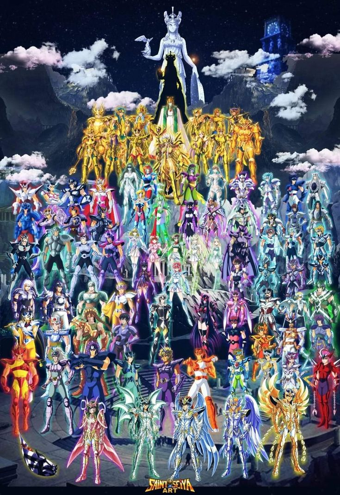

🔥⚔️ RPG CDZ: VIDAS ETERNAS A GUERRA DAS PROFECIAS! ⚔️🔥

Quatro reinos. Uma única verdade:
💥 A guerra é inevitável!
🌟 Santuário — os fiéis Cavaleiros de Atena
💀 Submundo — os Espectros do Imperador Hades
⚔️ Pallasbelda — Os guerreiros de Saturno, o Deus Supremo do Tempo
🌿 Reino de Éris — os semeadores do caos, servos da deusa da discórdia
Todos receberam o chamado...
Todos se preparam para a maior batalha do cosmo!
✨ Escolha seu lado.
✨ Desperte seu cosmo.
✨ Forje sua lenda.
PRÓLOGO — A GUERRA DAS PROFECIAS
“Quando o último astro vermelho brilhar, os pilares da paz ruirão.
A terra tremerá, os deuses chorarão sangue.
E das sombras, surgirá o renascimento do conflito eterno.”
Capítulo I – Ecos do Cosmos
No princípio, tudo era caos e silêncio. O universo, ainda em formação, pulsava em desequilíbrio até que os deuses surgiram como forças ordenadoras e destruidoras, semeando o Cosmo por toda a criação.
No princípio, tudo era caos e silêncio. O universo, ainda em formação, pulsava em desequilíbrio até que os deuses surgiram como forças ordenadoras e destruidoras, semeando o Cosmo por toda a criação.
Do Cosmo nasceram os mundos, os reinos e os seres capazes de moldar o destino com a própria alma. Durante eras, os deuses equilibraram o ciclo da existência com guerras e reconciliações. Mas a paz nunca foi o destino final, apenas um interlúdio entre duas guerras.
Agora, esse ciclo prestes a se reiniciar. O Cosmo estremece. As estrelas, antes fiéis ao silêncio, começaram a sussurrar.
Capítulo II – Os Quatro Reinos
Santuário
Erguido nas montanhas da Grécia, o Santuário serve à deusa Atena. Seus Cavaleiros — de Bronze, Prata e Ouro — treinam para proteger a Terra do mal e preservar a ordem cósmica. O Santuário é a lanterna da justiça, mas até mesmo sua luz vacila quando uma sombra sem forma começa a se aproximar.
Submundo
Nos confins da morte, reina o domínio de Hades. Ali, os Espectros caminham entre os vivos e os mortos, servindo ao Imperador das Trevas. O Submundo é regido por regras imutáveis... mas quando essas regras começaram a ser violadas por forças desconhecidas, até os juízes do inferno estremeceram.
Pallasbelda
Terra do tempo eterno, lar da razão implacável, Pallasbelda é governada pelo enigmático deus Saturno, senhor do tempo e da ruína. Com sua autoridade fria e absoluta, Saturno observa os outros reinos através de seus Guardiões Eternos, seres que transcendem passado e futuro. Por séculos, Pallasbelda manteve-se distante das guerras dos outros deuses. Mas agora, os relógios cósmicos aceleram, e os ecos do tempo revelam que o próprio equilíbrio do universo será quebrado.
Reino de Éris
No centro das florestas negras, sob raízes que sangram escuridão, desperta a deusa Éris. Senhora da discórdia, seu reino floresce onde há caos. Suas Dríades espalham confusão nos corações dos homens. Não é necessário iniciar a guerra — apenas aguardar que ela comece sozinha.
Capítulo III – A Profecia
Durante uma noite sem lua, uma estrela vermelha brilhou por sete dias no céu. Em cada um dos quatro reinos, um oráculo teve a mesma visão — uma mensagem gravada não por palavras, mas pelo próprio Cosmo.
“O Cosmo será dividido.
A balança do mundo cairá.
E os filhos dos deuses se enfrentarão até que só reste silêncio.”
O oráculo do Santuário entrou em transe e desapareceu.
O do Submundo se desintegrou em chamas negras.
Em Pallasbelda, um Relógio Sagrado parou pela primeira vez desde o nascimento de Saturno.
E no Reino de Éris, a Dríade que pronunciou as palavras foi consumida por uma maçã dourada em chamas.
A guerra não estava próxima. Ela já havia começado — nos planos mais altos da existência.
Capítulo IV – Fragmentos do Destino
Pelo mundo, jovens começaram a despertar seus cosmos espontaneamente. Sinais proféticos surgiram em locais esquecidos: templos ressuscitados, meteoros flamejantes, criaturas esquecidas pelas eras.
Um artefato do tempo reapareceu nas mãos de uma criança.
Espectros de Hades começaram a ouvir vozes do passado.
Um Cavaleiro de Ouro perdeu o controle do próprio Cosmo, sendo tragado por uma fenda temporal.
E a floresta de Éris, sempre contida, passou a engolir vilas e cidades com raízes vivas.
Os sinais eram claros. O Cosmo estava desestabilizado.
Capítulo V – O Despertar dos Deuses
Atena reuniu seus Cavaleiros de Ouro no Templo da Deusa. Preparava-se não apenas para combater uma guerra, mas para prevenir o colapso do próprio mundo.
Hades, através de Pandora, libertou espectros selados há milênios, incluindo forças que jamais deveriam voltar à existência.
Saturno, o deus adormecido, abriu as portas do Templo Cronal e ordenou o retorno dos seus Guardiões Eternos. Pallasbelda, antes neutra, tornou-se um vórtice de vigilância cósmica, onde o tempo oscilava em diferentes ritmos. Saturno declarou:
“Aqueles que jogam com o destino serão engolidos por ele.”
Éris, em silêncio, lançou sua maçã no centro da Terra. Seu papel estava cumprido: a discórdia já fermentava.
Capítulo VI – O Concílio da Última Paz
Na ilha de Delos, os quatro reinos se reuniram em um último esforço diplomático.
O Santuário exigia aliança para conter o desequilíbrio.
Hades recusava qualquer união com a deusa Atena.
O emissário de Saturno foi claro:
“O tempo não negocia. Ele apenas avança.”
A Dríade de Éris riu e anunciou que a paz não era necessária — apenas entretenimento.
As palavras foram duras. Os olhares, ameaçadores. As mãos, próximas das armas. Quando o céu escureceu no meio do dia, todos entenderam que aquela seria a última reunião sem sangue.
Capítulo VII – A Primeira Batalha
A guerra não começou com uma declaração.
Ela começou com o desaparecimento de cinco Cavaleiros de Bronze enviados a investigar um templo surgido em Pallasbelda.
Com a destruição de uma torre do Submundo por uma força desconhecida.
Com a quebra de um selo do tempo por um Guardião Eterno rebelado.
E com as raízes de Éris envoltas em chamas negras surgindo no meio do Santuário.
As linhas foram traçadas. Os reinos se moveram.
EPÍLOGO
O mundo não está apenas em guerra.
Está em colapso.
O Cosmo sangra. O tempo está desordenado. A discórdia reina. E a justiça, sozinha, tenta manter-se em pé.
Em meio a esse caos, surgem os heróis.
E também os vilões.
Ou talvez, neste novo ciclo, não haja mais diferença entre eles.
E você?
Qual é o seu papel na Guerra das Profecias?
"A chama de seu Cosmo será a caneta que reescreverá o destino."
Sistemas do RPG parte 1
⚜️SISTEMA BÁSICO DO VIDAD ETERNAS RPG⚜️
Narrativo ou textual
O que é um RPG de texto?
O jogo é uma troca de mensagens em que cada jogador move a trama um pouco do ponto de vista do seu personagem a cada turno usando falas, descrições e ações, assim como um autor faria ao escrever a cena de um livro.
-/-/-/-/-/-/-/-/-/-/-/-/-/-/-/-/-/-/-/-/-/-/
🔅Nível Bronze
Velocidade de Mach 1 á Mach 3
Quantidade base de ataques durante uma rajada cósmica (100 á 300) Obs.: a cada mach irão ser aumentados 100 vezes por segundo
☸️ Elementos
🔥 Fogo:800° C
💨 Ar: F1/F2 (180 á 253 hm/h)
❄️ Gelo: - 150° C
💧 Água:1.000 L
⚡ Trovão:5.000 Volts
🌍 Terra: Escala Mercalli 5
⚜️ V FortePraticamente sentido por toda a população, fazendo acordar muita gente. Há queda de alguns objectos menos estáveis e param os pêndulos dos relógios. Abrem-se pequenas fendas nos estuques das paredes.
-/-/-/-/-/-/-/-/-/-/-/-/-/-/-/-/-/-/-/-/-/-/
💠 Nível Prata
Velocidade mach 4 á mach 10 Quantidade base de ataques durante uma rajada cósmica (400 á 1.000) Obs.: a cada mach irão ser aumentados 100 ataques
☸️ Elementos
🔥Fogo: 2000°C
❄️ Gelo:-200°C
⚡ Eletricidade:* 100.000Volts
💨 Ar:F3/F4 (332 à 418 km/h)
💧 Água: capaz de dominar ondas de até 5 metros de altura
🌍 Terra: Escala Mercalli 7
*VII Muito forte* _Caem muitas chaminés. Há estragos limitados em edifícios de boa construção, mas importantes e generalizados nas construções mais frágeis. Facilmente perceptível pelos condutores de veículos automóveis em trânsito, desencadeia pânico geral nas populações._
-/-/-/-/-/-/-/-/-/-/-/-/-/-/-/-/-/-/-/-/-/-/
🔆 Nível Ouro
Velocidade da luz
☸️ Elementos
🔥 Fogo: 5000°C ( aproximadamente a temperatura do sol )
❄️ Gelo: - 273.15°C (Zero Absoluto)
⚡ Eletricidade:100.000.000 V
💨 Ar: F5/F6 (512 à 533km/h)
💧 Água: Capaz de dominar ondas de até 10 metros de altura
- Quantidade base de ataques durante uma rajada cósmica 100.000.000 ( 100 milhões
🌍Terra: Escala Mercalli 9
XI Catastrófico* _Destruição da quase totalidade dos edifícios, mesmo os mais sólidos. Caem pontes, diques e barragens. Destruição das redes de canalização e das vias de comunicação. Formam-se grandes fendas no terreno, acompanhadas de desligamento. Há grandes escorregamentos de terrenos.
[💪🏻 <{Treinos}>🦾]
Treino solo:Um treino de cena unica, com no mínimo 300 palavras explicando oque você fez para ganhar tais pontos, como correr, levantar peso essas coisas!
Limite: 4 por semana
Recompensas: 50Xp
Treino duo:um treino com 2 pessoas, aonde acontece um combate amistoso, sendo proíbido matar seu "rival", a batalha deve ter mo minimo 70 Palavras e no mínimo 5 cenas cada._
Limite: 2 por semana
Recompensas: 5/5> 50Xp 10/10>100Xp
Sistema de Missão Auto-narrada.
Esse sistema vem para que todos possam ter uma facilidade em poder evoluir, podendo fazer missões de forma mais fáceis e pratica, As missoes serão destinada por reinos, de forma que cada reino tenha seu tipo de missão._
Missao do Santuário:Aqueles que ja possuírem uma armadura poderão fazer missões de Reconhecimento, aonde podem ir ate tal local para Buscar informações
🔖SISTEMA BÁSICO DE ASCENÇÃO CÓSMICA.
•TEXTUAL•
Todos devem seguir o padrão de queima do cosmo para empregar nas cenas.
📌Ordem em cena
⚔️Acender •Vem antes da elevação do cosmo sendo assim a primeira forma.
Elevar •Após acender do cosmo é necessário a elevação para ter acesso ao cosmo do sentido além da velocidade empregada
Ex: Acender o cosmo
Cassandra de câncer inicia a seu acender de cosmo na qual ultrapassa os cinco sentidos primários atingindo seguidamente o sexto intuito.
Cassandra de câncer acende seu cosmo na qual ultrapassa os cinco sentidos primários atingindo seguidamente o sexto intuito.
Cena usando o termo
■CENA acima é a explicação de acender o cosmo.
⚔️ Elevação do cosmo :
Cassandra eleva sua cosmo energia do sexto sentido para usar de sua habilidade……
■CENA ACIMA É EXPLICAÇÃO DE ELEVAÇÃO APOS ACESO.
CENA DE TESTE
CASSANDRA ACENDE SUA COSMO ENERGIA PASSANDO PELOS DEMAIS SENTIDOS PRIMÁRIOS ATINGINDO O SEXTO INTUITO POSTERIORMENTE.
LOGO A MESMA ELEVA SEU COSMO DO SEXTO SENTIDO NA QUAL CONCENTRA O SEU COSMO EM SEU PUNHO E RAPIDAMENTE EM MACH 1 DISPARA UMA RAJADA CÓSMICA.
Toda vez que for ataca ou usar uma habilidade pra algo será necessário elevar o cosmo pra tal feito.
Ex:Kilua de cisne parte para cima do oponente na qual eleva o cosmo do sexto sentido pra usar de seu golpe pó de diamante.
OBS:para que isso aconteça, nunca se esqueça de queimar o cosmo antes da elevação.
🈲•uso da armadura
•Será necessário Queima e elevação de cosmo do sexto ou sétimo para vestir a armadura
🈂️•Elementos
•ataques e defesas que envolve elemento será necessário uso de cosmo.
⚔️Classificação Ranking ⚔️
🏛️ Santuário 🏛️
🔴Rank SS :deuses
(Requisitos 30.000XP)
🟠Rank EX: Cavaleiros Lendários ou pseudo.
(Requisitos 10.000XP)
🟡Rank S1:Cavaleiros de ouro.
(Requisitos 5500XP)
🟡Rank S: Cavaleiros de ouro
( Requisitos 4000XP)
⚪Rank A1:Cavaleiros de prata.
(Requisitos 2500XP)
⚪Rank A: Cavaleiros de prata
(Requisitos:2000XP)
🟤Rank B1:Cavaleiro de bronze.
(Requisitos 1500XP)
🟤Rank B: Cavaleiro de bronze
( Requisitos 1000XP )
⚫Rank C: Aspirantes a Cavaleiros
》Livre
📋Lista de armadura disponível
🚫ocupadas
✅livres
⌛️ aspirante
🔏Duas pessoas aspirante(máximo2)
🚫 Pegasus
✅ Fênix
✅Ave do paraíso
✅Dragão
✅Cisne
✅Lobo
✅Urso
✅ursa
✅Hidra macho
✅Hidra
✅Serpente
✅Coroa boreal
✅Andrômeda
✅Cavalo menor
✅leão menor
✅Unicórnio
✅Cassiopéia
✅Peixe austral
✅Golfinho
✅Raposa
✅Ferramentas
✅índio
✅Rena
✅Máquina pneumática
✅Sombras
✅Vespa
✅Eridano
✅Compasso
📋Armaduras negras.
✅Pegasus
✅fênix
✅cisne
✅Andrômeda
✅dragão
📒MANUAL DE REGRAS DO RPG VIDAS ETERNAS📒
01•Toda ação deve conter seu cabeçalho.
se quiser um exemplo peça a um adm
>OBRIGATÓRIO
02•Habilidade vs técnica
Uma só irá sobrepor à outra se a quantidade de cosmo for superior.
03:É proibido práticas de crueldades dentro do rpg seja na jogabilidade ou não
04:não será mais proibido afirmar que várias ações foi feita em uma só velocidade.(ex:tudo mach2 ou toda ação em mach 2(é possível está em uma velocidade e fazer várias ações).
05•Locais protegidos por poderes divinos não podem ser rompidos a não ser por alguma arma divina e habilidades de teleporte e portais ou até dimensões não podem atravessar esses lugares.
06•A comunicação pelo cosmo será permitido dentre os Santos cavaleiros
07•🚫Meta game
08•Projeção Astral:o uso dessa habilidade deve ser feita com cautela informando a sua localização em cena e onde está projetando.(habilidade só será obtida atrás de eventos)
09•O combate deve ser de forma crescente nunca podendo iniciar com ataque mesmo se tiver uma única técnica.
10•Ataques diretos no jogador enquanto ele invoca sua técnica,está proibido.
11•Exclamação de Athena só poderá ser usada por cavaleiros de ouro .
12•Fica em cargo dos adm analisar todas as lutas e ajudar na definição dos vencedores.
13•as cenas devem seguir o padrão de uso de cosmo=Acender e elevação.
14•a mesma elevação para usar uma habilidade não servirá pra uma técnica.
Ex:Castiel eleva seu cosmo do sexto para usar uma habilidade e logo em seguida usa sua técnica.....
(Não será permitido)
Deverá fazer duas elevações de cosmo para as duas ações.
15° Proibido ir Ao pv do colega importunar ou zombar ,causando desconforto ao player dentro do rpg.
16•Ataques mentais não colidem com ataques físicos.
Somente colidem com outros golpes mentais!
17° Palavras ofensivas,figuras de conteúdo adulto ou que der significado do mesmo resultará em punição.
18° Proibido envio de fotos audios ou de qualquer outra coisa apos a Finalização da cena.
19° E estritamente Proibido o Uso do Chat Gpt ou qualquer tipo de I.A em Cenas no Rpg.
20° A mudança de reino deve ser informada a ambos os Deuses e a adm, caso tudo aprovado, O mesmo irá começar da patente mais baixa, sendo aspirante.
21° Todas as batalhas ocorridas devem ter 5 cenas...sendo 1 de introdução.
Não pode atacar na primeira cena.
21- 1° O cavaleiro em batalha poderá lampeja um rank acima do seu na última cena na qual ao fazer isso perderá a consciência.
Essa ação, o cavaleiro irá elevar seu cosmo ao apse sendo o último recurso.
Tal lampejo somente de velocidade.
Ex: Rank B ,lampejo a rank A (mach 6)
🏛️ITENS EVOLUTIVOS🏛️
📓-Livro de estudos para iniciantes.
Bônus:O item pode ser trocado por XP onde irá ser adquirido em missões diárias.
Cada missão equivale a 1 livro.
100 livros podem ser trocados por 50XP.
📘-Livro de estudos intermediários.
Bônus:O item pode ser adquirido em missões diárias podendo ser trocados por XP.
Cada missões concluída irá ganhar 1 Livro azul.
100 livros equivale a 180XP.
🔮Pedra mágica.
Bônus: essa pedra serve para evoluir a armadura a um nível acima.
Ex:Armadura V1 irá evoluir pra V2.
O item é encontrado em missões, Saga e eventos.
Necessário 200 pedras pra evolução.
🏛️Novos item serão adicionados conforme o rpg irá sendo desenvolvido. 🏛️
Sistema de % e sua formas de usos e Funcionalidade.
🌀Inicialmente um cavaleiro começa com 5% do Sexto sentido e vai aumentando Gradualmente, quando alcançar 100% do sexto ele passa a ganhar % do sétimo sentido, a mas quem não tem 100% do sétimo e usar um valor de x% do sétimo contra quem ja tem 100% do sétimo e essa pessoa usar a mesma x%, a pessoa que tem domínio ira prevalecer sobre o outro pelo simples fato do domínio, para caso contrário aquele que não tem domínio deve ter um valor maior do que quem tem domínio de no mínimo 10% do sétimo sentido, Agora vamos a forma de uso
🌀Killua Acende seu Cosmo Superando os 5 sentidos naturais e alcança o sexto sentido, Logo ele eleva 1% do sexto sentido Para fazer seu cosmo e o da armadura ressoar e vestir sua armadura.
🅾️🅱️: É estritamente Obrigatório ter essa elevação se % para que Vista sua armadura, a mas se caso você for gold, usara % do sétimo sentido e não do sexto.
🌀Frente a meu adversário eu Elevo 10% de meu Sexto sentido e concentrando o cosmo elevado em meu punho Uso meu Meteoro de pegasus disparando Centenas de Socos em forma de meteoros contra meu oponente em Mach 3
🌀Elevo 5% de meu Sexto sentido e frente ao meu inimigo Uso de meu cosmo elevado para Desacelerar os átomos ao meu arredor para Diminuir a temperatura drasticamente para -100°C
🅾️🅱️²: Sempre que for usar uma técnica Ou uma habilidade deve haver a elevação do cosmo antes de usar tais feitos, a Técnica tem uma % Mínima de 10% do sentido que for usado e a habilidade tem uma % mínima de 5% do sentido que for usado, sempre descreva como seu cosmo vai fazer tal habilidade funcionar.
🌀Quando for Usar o lampejo para Velocidade deve usar 15% do Sentido que domina para Usar até 2 Mach Acima do que o seu atualmente
🅾️🅱️³: Diferente do Lampejo de Velocidade o Lampejo Para usar um sentido Superior Deve vir de Converter no mínimo 25% do sentido abaixo do que vai lampejar e poder usar 10% do sentido que vai ser lampejado, caja lampejo Poderá ser feito Duas Vezes em combate.
TABELA DE XP.
Evolução de Armaduras
Armadura V2= 300Xp e 300 Pó Estelar.
Armadura V3= 400Xp e 400 Pó Estelar
Armadura Dourada= 800 Xp e 850 Pó Estelar
Omega= 1000 Xp e 800 Pó Estelar
Nova Habilidade= 500Xp
Requisitos Especiais:
Armadura Dourada: Essa armadura deve Receber o sangue de Algum cavaleiro de Ouro, Aonde o efeito da armadura dourada tem como Duração 4 Turnos
Ômega:Para Ter acesso a esse poder, deve se ter pelo menos domínio do Sétimo sentido, mas também precisa ter mérito Como Usuário de Cosmo além de uma situação De Quase morte, que aqueles que conseguirem, possuirão Poder Equivalente a Suprema Virtude.
Nova Habilidade: Quando Usar o Xp, deve Criar a Habilidade mandar para Aprovação, quando Aprovada Deve fazer 4 Treinos solos sem ganho de Xp para desenvolver a Habilidade